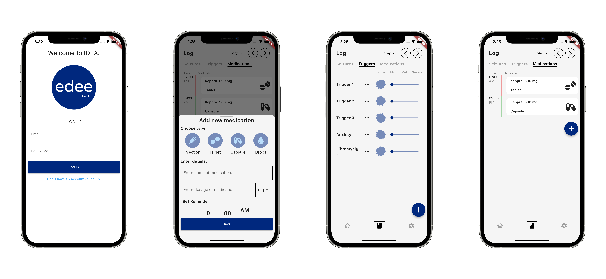
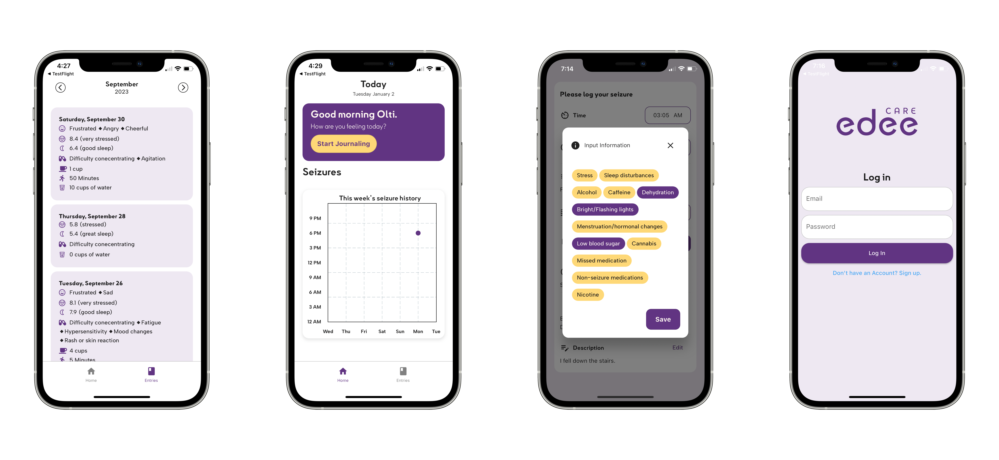

January 2023 - October 2023
I embarked on an exciting project called IDEA (Interactive Daily Epilepsy Assistant) while working as a Product Manager Intern and Software Engineer Intern at Edee Care, a startup dedicated to creating solutions for people with epilepsy. The mobile app, IDEA, was developed to help users track their seizures, triggers, and medication. Leading the development of this project was not only technically demanding but also incredibly impactful, aiming to improve the quality of life for those living with epilepsy.
As the sole software developer on this project, I faced the task of building the app using Flutter for the frontend, Node.js for the backend, and MongoDB for data management. Despite my limited prior experience with these technologies, I was committed to learning them from scratch. This required a deep understanding of not only the technical aspects but also how to integrate them seamlessly into a functional and user-friendly application.
The most valuable skill I honed during this project was adaptability in technology. Quickly assimilating new programming languages and frameworks was essential. The experience of developing an app single-handedly that positively impacted the real world was immensely gratifying and a significant milestone in my career.
The project started with the IDEA SMS pilot program, a test to both gather market information and validate the company's value proposition. It utilized Heymarket to manage SMS communications, sending periodic text messages to users as a personalized assistant and prompting them to complete a Typeform survey twice a day. My role was to manage the data collected from users and create weekly reports detailing their condition. I also conducted interviews with our initial users. The success of this trial led us to begin phase 2: the IDEA mobile application V1.
After months of piloting our SMS program, we leveraged our insights to develop the initial version of our mobile application. As the lead developer, I opted for Flutter, valuing its cross-platform functionality, and integrated it with a Node.js and JavaScript backend, utilizing Express for efficient routing and MongoDB with Mongoose for effective data management. This initial MVP featured core functionalities like recording seizure incidents, identifying triggers, and tracking medications. Though basic, it was instrumental in launching the app on Apple TestFlight for user trials. This process was not only pivotal in introducing the app to users but also in enhancing my understanding of Flutter, Node, and MongoDB. Initially unfamiliar with these technologies, I navigated through early challenges and was now ready to apply these valuable lessons to the forthcoming iteration of the mobile MVP.
The second iteration of the IDEA app marked a significant transformation, initiated by feedback from V1 testing and the addition of new UX designers. This phase included a revamp of Edee Care’s visual style, resulting in a major rewrite of the frontend code for better integration of design changes, and improvements in state management for enhanced performance and scalability. We also updated our database schema for greater user customization, transitioned our backend from JavaScript to TypeScript for increased robustness, and refined the onboarding and health integration processes to better cater to individual user needs.
Initially, our app architecture relied on "parameter passing" for state management, a method good for smaller applications but less suitable for our expanding project. This simple technique, however, was becoming cumbersome. To address this, I shifted to using Provider, a package that centralizes data access and facilitates state management within the application. This change not only improved scalability but also minimized the coupling between widgets, making them more independent and test-friendly. With Provider, only UI components listening to state changes needed to rebuild, enhancing performance.
To fully leverage Provider's capabilities, I transitioned our application's architecture from MVC (Model View Controller) to MVVM (Model View ViewModel). This change complemented Provider’s design, which is geared towards efficient state distribution in Flutter. MVVM’s reactive programming style, supported by ChangeNotifierProvider, allows UI components to automatically update in response to ViewModel state changes. This architecture enhanced the separation between business logic and UI code, improving testability and maintainability.
The original database design in MongoDB centered around a "User" object. This object encapsulated essential information like email, password, and name. Additionally, it linked to other related objects such as Medication, Seizure_event, and Triggers. For instance, within the "User" object, a field named 'seizures' held an array of ObjectIDs, each pointing to a distinct seizure event. We utilized Mongoose on the server to enforce and manage this schema effectively.
Our preference for a NoSQL database like MongoDB was driven by its inherent flexibility. As our application was poised for continuous evolution, the ability to effortlessly add new fields or modify the existing schema was crucial. MongoDB's dynamic nature perfectly suited our needs for adaptability.
Given the specific requirements of a health application, particularly one focused on epilepsy, we recognized the need for greater personalization. A one-size-fits-all approach was insufficient, as each user's condition and triggers are unique. This became particularly evident with our first user in the pilot program, who reported specific triggers related to Fibromyalgia.
To enhance customization, we introduced the concept of user-defined types. While we had a standard set of triggers applicable to all users (like alcohol, sunlight, and heat), we also wanted users to have the ability to add specific triggers unique to their condition, such as Fibromyalgia. However, integrating this feature within the existing schema presented challenges.
Working alongside the CTO and our machine learning engineer, we crafted a new schema that aligned with our vision of a highly personalized user experience. This revised schema included a collection named 'constants', consisting of 'type' and 'value' fields. For example, under a 'triggers' collection, a 'lookup_name' field would reference an ObjectID corresponding to a 'constant'. This constant would define a specific trigger, such as Fibromyalgia (type: Trigger, value: Fibromyalgia). This approach was also applied to other constant types like Journal Categories, Medications, and Chronic Conditions.
Our overarching goal was to create a mobile application that could provide tailored journal prompts, specifically catering to the individual user's condition. This revamped database schema was a pivotal step in realizing our ambition of a customizable and user-centric mobile health application.
A key decision in our development process was the transition from JavaScript to TypeScript for our NodeJS server. Recognizing TypeScript's growing popularity and its array of benefits, I saw our project's transitional phase as an great moment to adopt this technology. Given the relative simplicity of our server architecture, the shift to TypeScript was a smooth and straightforward process. For MongoDB schema implementation, we utilized Typegoose , which seamlessly integrated with TypeScript.
Enhanced Developer Experience: The switch to TypeScript marked a significant improvement in our development workflow. TypeScript's robust type system provided improved autocompletion, more precise IntelliSense, and superior code navigation capabilities. These features not only streamlined coding but also reduced the likelihood of errors.
Increased Code Reliability: TypeScript's strict typing instilled greater confidence in the accuracy of our code. By ensuring type correctness, TypeScript substantially minimized common coding mistakes. This level of reliability was particularly beneficial for debugging, making the process more efficient and less prone to errors.
Aligned with our commitment to delivering a highly customizable user experience, we implemented a thorough onboarding process for the IDEA app. This process was designed to gather essential user information, creating a comprehensive profile. It encompassed the collection of basic personal details such as the user's name and age, alongside specific epilepsy-related information. Crucially, it also provided users with the opportunity to define their personal health goals, tailoring the app to their unique needs and preferences.
A pivotal component of our application was the integration with users’ mobile device health applications. This feature was central to one of our primary objectives: the acquisition of real-time health data through smartwatches. To facilitate this, I utilized a health package that enabled seamless integration with major health platforms like Apple Health and Google Fit. This integration was an initial step towards developing a robust system for real-time health data tracking. While the current implementation showed promising functionality, it exhibited some minor bugs. Addressing these issues and enhancing the system's capabilities will be a key focus in our ongoing development, ensuring we evolve towards a sophisticated health tracking solution.
Working on the IDEA project at Edee Care has been the largest and most enriching project I've undertaken in my career thus far. Working in both Product Management and Software Engineering as an intern, I navigated new technologies and complex problem-solving, gaining invaluable skills. This project, significant in its impact on epilepsy care, not only sharpened my technical abilities but also deepened my insight into user-focused design and innovation.
Be sure to check out Edee Care for updates on their product!